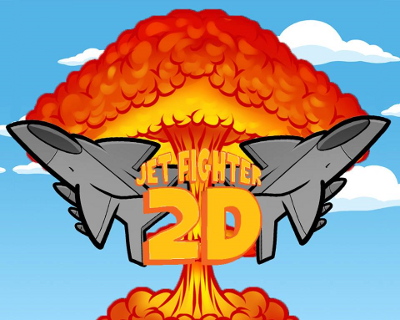

| Visit |
|---|
 |
 |
| Hoogstraatsebaan 2 - 2390 OOSTMALLE - Tel. 03 309 23 00 - immaculata@immalle.be |
| Visit |
|---|
|
|
| Hoogstraatsebaan 2 - 2390 OOSTMALLE - Tel. 03 309 23 00 - immaculata@immalle.be |
Welkom op de opendeurdag van het Immaculata Instituut te Oostmalle!
Ieder jaar zetten onze leerlingen van informatica hun beste beentje voor om de mooist mogelijke projecten klaar te stomen voor de opendeurdag van onze school en dit jaar is dat niet anders.
Drukke werkdagen in groepjes hebben uiteindelijk hun vruchten afgeworpen en wij kunnen dan ook met trots de nieuwste (en oudere) projecten van onze leerlingen informatica tonen op deze pagina.
We hopen dat u plezier beleeft in het bekijken, lezen en uittesten van deze IT projecten.
Elke leerling van het 6e jaar Informaticabeheer moet een geïntegreerde proef afgeven. Dit gebeurt in 6I alleen nog maar digitaal. De leerlingen geven hun GIP-taak af in de vorm van een blog. Hieronder vindt u links naar verschillende blogs van de leerlingen van 6I.
Toon De Doncker
Cedric Rosquin
Eli Hendrickx
Teacher Aid is een project voor leerlingen van het zesde jaar Informaticabeheer van het Immaculata Instituut in Oostmalle.
Hierbij geven de leerlingen uitleg aan leerkrachten over allerlei programma's of (online)tools om hun lessen te verrijken met behulp van IT.
Het is nu de vijfde jaargang van het project.
Teacher Aid heeft ook een Facebook-pagina die men te allen tijde kan raadplegen.
Hiernaast raden wij ook het YouTube kanaal aan waar de leerlingen van 6I instructiefilmpjes op hebben gezet.
Dit jaar zijn er weer heel creatiëve projecten gemaakt speciaal voor de opendeurdag en het thema is 'Gaming' dit jaar.
|  | Ontwijk de raketten die van alle mogelijke kanten komen en gebruik de power-ups, maar pas op want deze zullen steeds sneller en sneller naar je toe komen. |
| Speel met de wii-controller en blijf zo lang mogelijk overleven met 4 levens. De keuze van strategie is aan jouw: Schiet of ontwijk. |
Hier kan u projecten vinden die gemaakt zijn door leerlingen van het 6e jaar, sommige hiervan zijn verbeterd door de leerlingen van het 5e jaar:
Leerlingen van 5 Informaticabeheer van het Immaculata Instituut gingen op 29/03/2013 op "Wifi Walk", met als doel om de wifi-netwerken in het centrum van Oostmalle in kaart te brengen.
Meer informatie hierover kan u hier vinden.